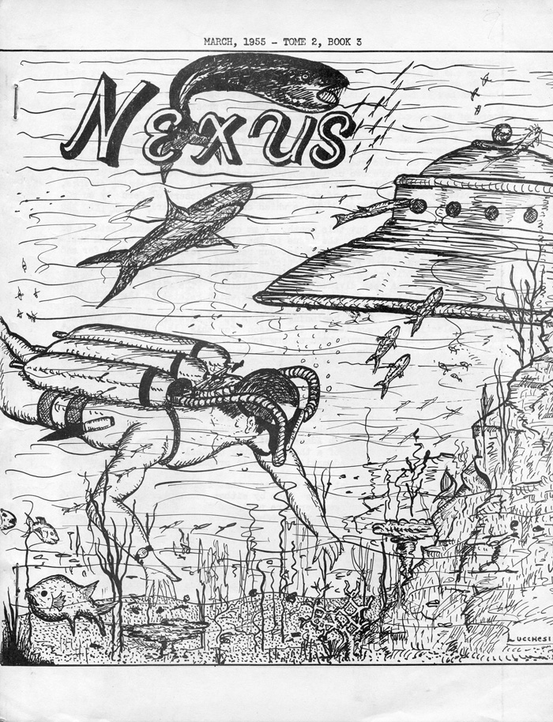

Couverture de Fate ce mois-làCouverture de Nexus de printemps

Près de Saint Louis (Etats-Unis), un femme observe : J'observais un avion à réaction
volant dans ma direction quand, soudain, sans coup férir, un étrange engin vint derrière lui et le fit disparaître
instantanément sous mes yeux. Cet engin avait une ouverture dans le champ de ma vue et près de l'avion. Après
l'avoir "absorbé", il s'arrêta et sa "porte" se ferma. Puis, il monta et descendit pendant environ 30 secondes, et
enfin disparut rapidement. Pendant qu'il était en train de descendre et de remonter, je pus voir de la vapeur ou
de la fumée sortir de ce qui ressemblait à des portières ou fenêtres rondes au sommet de cet engin. Ce dernier
avait la forme d'une cloche ordinaire et était assez vaste pour porter plusieurs avions du type de celui qu'il
avait capturé. Tout ceci se passa, pour ainsi dire, près de moi, et je pus parfaitement voir l'avion et l'engin.
L'avion était un léger chasseur bombardier, et il fut porté disparu par la radio de Saint Louis. Il ne fut jamais
retrouvé. Quelques temps après, un engin identique poursuivit 3 avions à réaction. Ces engins étranges sont, sans
aucun doute, les objets les plus rapides que j'aie jamais vus. J'ai minuté la vitesse des avions quand l'engin les
poursuivait : il parcourut en quelques secondes la même distance que les "Jet" en 3 mn."
À Avalon (Californie), sur l'île
Santa Catalina, Paul J. Carr voit un objet orange brillant, de la taille apparente d'une
pièce de 5 cents tenue à bout de bras. L'officier qui rédige le rapport le juge possiblement astronomique et ne
justifiant pas d'enquête complémentaire
DOW-UAP-D177, Unresolved UAP Report, Catalina Island, 1955, PURSUE n° 7, .
À Komotini (Grèce), selon le journal
Apogevmatini, des soucoupes volantes décrivent des cercles au-dessus de la ville : la veille au
soir, des soucoupes inconnues évoluent en formation circulaire de l'ouest vers l'est.
GRUFON y voit très probablement des météorites,
faute d'information sur les objets et leur formation.Hellenic
UFO Database, Volume I, GRUFON,
, fiche GR_1031.
À Makrinitsa, Volos (Grèce), selon le
journal Eleftheria, des habitants de Makrinitsa qui sortent d'un cinéma vers 3 h 30 voient à
l'horizon des objets volants en forme de boule et de disque. Deux d'entre eux ressemblent à un parapluie surmonté
d'un anneau lumineux. Ils les prennent d'abord pour des avions venant de l'aérodrome, mais en les voyant approcher,
comprennent que ce sont des objets inconnus.
GRUFON l'attribue à un engin terrestre.Hellenic
UFO Database, Volume I, GRUFON,
, fiche GR_1013.
À Mitropoli, Karditsa (Grèce), selon
le journal Anagennisis du 26 mars 1955, un phénomène céleste ressemblant à une soucoupe volante
apparaît à 15 heures en direction de Vlasdo. Les habitants le regardent approcher à basse altitude et se poser près
du village. Trois jeunes gens se rendent sur place et découvrent un ballon de nylon d'environ 2 m de diamètre, qui
s'est déchiré à l'atterrissage ; ils en rapportent les morceaux au village.
GRUFON l'attribue à un ballon-sonde.Hellenic
UFO Database, Volume I, GRUFON,
, fiche GR_1014.
À Pyrgi, Agrinio (Grèce), selon le journal
Kathimerini, Dim. Vouras, 40 ans, propriétaire de Pyrgi, déclare à la police le samedi qu'une
soucoupe volante s'est posée dans une zone agricole en laissant une enveloppe contenant une lettre en grec. Les
témoins sont Pavlos Tzimaras, Ilias Rettas, Ioannis G. Tzimas, Pigio et Eleni Mitsou ; Tzimaras et Rettas emportent
l'enveloppe au village, où l'objet disparaît. L'enquête du commandant du poste d'Agios Konstantinos, M. Ntakos,
établit qu'il s'agissait d'un petit ballon du Service météorologique, que la déclaration sur la lettre était fausse
(elle avait été dissimulée) et que la dépêche d'un journal athénien sur une « soucoupe volante à Agrinio » relevait
de l'imagination. GRUFON l'attribue à un ballon
militaire.Hellenic
UFO Database, Volume I, GRUFON,
, fiche GR_1021.
À Ntamata, Céphalonie (Grèce), le
témoin A. P. voit un objet volant vert et triangulaire descendre de très haut et se poser sur la mer à 300 m du
rivage ; deux minutes plus tard, il repart à vitesse vertigineuse vers l'ouest. Le journal Neologos
Patron (27 mars 1955) ajoute que les témoins sont en voiture, hors du village, à 04 h 30 à l'aube, et qu'au même
moment un autre engin se pose dans un champ de la région de Lixouri : les villageois accourus ne peuvent s'approcher
car il s'élève, mais il reste longtemps visible. Source : Vembos, To pnevma tou chronou, p. 406.
Hellenic
UFO Database, Volume I, GRUFON,
, fiche GR_0040.
À Skiathos (Grèce), selon le journal
Ethnos, l'équipage d'un avion de la T.A.E. (Thessalonique-Athènes) rencontre à 17 h 50, à
5500 pieds d'altitude, au nord de Skiathos, un objet volant inconnu en forme de cloche renversée, transparent avec
un noyau blanc, de 2 à 3 m. Le pilote N.S. et l'hôtesse M.Z. déclarent qu'il apparaît soudain, reste visible deux
minutes en volant en parallèle à 50 m, puis s'éloigne à grande vitesse et disparaît. Il est parfaitement silencieux
et ne peut être rattaché à aucun appareil ou phénomène météorologique connu.
Hellenic
UFO Database, Volume I, GRUFON,
, fiche GR_1020.
À Amaliada (Grèce), selon le journal
I Imera, les « objets volants » vus dans le sud de la Grèce seraient des ballons américains en
matériau léger, porteurs de tracts anticommunistes. Ils volent à haute altitude, sont emportés par les vents et
dispersent leurs tracts en descendant. À Amaliada, des tracts au contenu fortement anticommuniste ont été retrouvés.
GRUFON l'attribue à un ballon militaire.Hellenic
UFO Database, Volume I, GRUFON,
, fiche GR_1015.
À Argostoli, Céphalonie (Grèce),
selon le journal I Imera, le témoin observe à 16 h 30 un objet vert triangulaire qui descend de
très haut et se pose à 300 m au large en mer. Quelques minutes plus tard, il s'en détache et s'éloigne très vite
vers l'ouest. Au même moment, un objet semblable se pose dans un champ de la région d'Alphée puis s'élève très haut
et reste visible assez longtemps.
Hellenic
UFO Database, Volume I, GRUFON,
, fiche GR_1016.